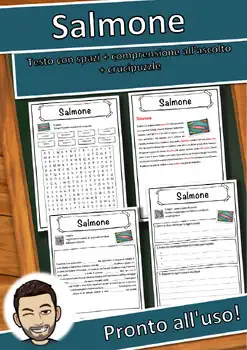
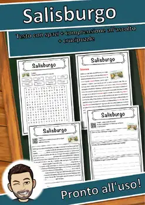
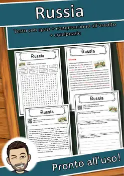
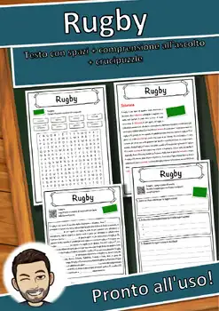
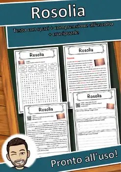
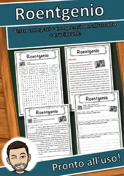
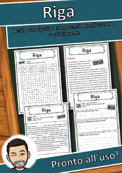
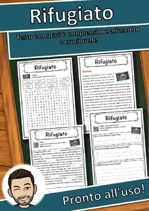
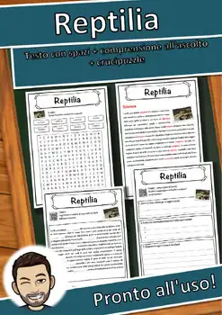
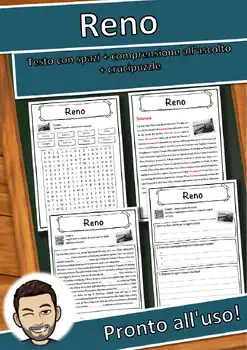

Reading Comprehension Worksheets
Informational text as a cloze passage with word bank, a QR-code listening task with free audio, and a word search – 5 pages with answer keys.
4,337 resources
Subject
Grade
By grade: 5th Grade · 9th Grade

Salmone – Italian Reading Comprehension Worksheet (Scheda): Cloze & Listening

Salisburgo – Italian Reading Comprehension Worksheet (Scheda): Cloze & Listening

Sahel – Italian Reading Comprehension Worksheet (Scheda): Cloze & Listening
Safari – Italian Reading Comprehension Worksheet (Scheda): Cloze & Listening

Sacerdote – Italian Reading Comprehension Worksheet (Scheda): Cloze & Listening

Sabbia – Italian Reading Comprehension Worksheet (Scheda): Cloze & Listening

Rübezahl – Italian Reading Comprehension Worksheet (Scheda): Cloze & Listening

Rösti – Italian Reading Comprehension Worksheet (Scheda): Cloze & Listening

Rutenio – Italian Reading Comprehension Worksheet (Scheda): Cloze & Listening

Russia – Italian Reading Comprehension Worksheet (Scheda): Cloze & Listening

Ruscello – Italian Reading Comprehension Worksheet (Scheda): Cloze & Listening

Ruota – Italian Reading Comprehension Worksheet (Scheda): Cloze & Listening
Ruminantia – Italian Reading Comprehension Worksheet (Scheda): Cloze & Listening

Rum – Italian Reading Comprehension Worksheet (Scheda): Cloze & Listening

Ruggine – Italian Reading Comprehension Worksheet (Scheda): Cloze & Listening

Rugby – Italian Reading Comprehension Worksheet (Scheda): Cloze & Listening

Rublo – Italian Reading Comprehension Worksheet (Scheda): Cloze & Listening
Rubidio – Italian Reading Comprehension Worksheet (Scheda): Cloze & Listening

Rovine – Italian Reading Comprehension Worksheet (Scheda): Cloze & Listening
Rotterdam – Italian Reading Comprehension Worksheet (Scheda): Cloze & Listening

Rosolia – Italian Reading Comprehension Worksheet (Scheda): Cloze & Listening

Rosa Parks – Italian Reading Comprehension Worksheet (Scheda): Cloze & Listening

Rosa – Italian Reading Comprehension Worksheet (Scheda): Cloze & Listening
Romania – Italian Reading Comprehension Worksheet (Scheda): Cloze & Listening
Roma – Italian Reading Comprehension Worksheet (Scheda): Cloze & Listening
Rom – Italian Reading Comprehension Worksheet (Scheda): Cloze & Listening

Roentgenio – Italian Reading Comprehension Worksheet (Scheda): Cloze & Listening
Rodio – Italian Reading Comprehension Worksheet (Scheda): Cloze & Listening

Rodentia – Italian Reading Comprehension Worksheet (Scheda): Cloze & Listening
Rodano – Italian Reading Comprehension Worksheet (Scheda): Cloze & Listening

Rococò – Italian Reading Comprehension Worksheet (Scheda): Cloze & Listening

Robin Hood – Italian Reading Comprehension Worksheet (Scheda): Cloze & Listening

Rock – Italian Reading Comprehension Worksheet (Scheda): Cloze & Listening

Roccia – Italian Reading Comprehension Worksheet (Scheda): Cloze & Listening
Robot – Italian Reading Comprehension Worksheet (Scheda): Cloze & Listening

Ristorante – Italian Reading Comprehension Worksheet (Scheda): Cloze & Listening

Rispetto – Italian Reading Comprehension Worksheet (Scheda): Cloze & Listening

Riso – Italian Reading Comprehension Worksheet (Scheda): Cloze & Listening

Rio Grande – Italian Reading Comprehension Worksheet (Scheda): Cloze & Listening

Rinde – Italian Reading Comprehension Worksheet (Scheda): Cloze & Listening
Rilievo – Italian Reading Comprehension Worksheet (Scheda): Cloze & Listening

Riga – Italian Reading Comprehension Worksheet (Scheda): Cloze & Listening

Rifugiato – Italian Reading Comprehension Worksheet (Scheda): Cloze & Listening

Riese – Italian Reading Comprehension Worksheet (Scheda): Cloze & Listening
Reykjavík – Italian Reading Comprehension Worksheet (Scheda): Cloze & Listening

Reptilia – Italian Reading Comprehension Worksheet (Scheda): Cloze & Listening

Reno – Italian Reading Comprehension Worksheet (Scheda): Cloze & Listening

Renio – Italian Reading Comprehension Worksheet (Scheda): Cloze & Listening
No resources found – try a different search term or filter.